	    <html>
	      <head>
				  <meta http-equiv="content-type" content="text/html; charset=utf-8" />
	        <title>index</title>
					
					<link href="toc/style/github-bf51422f4bb36427d391e4b75a1daa083c2d840e.css" media="all" rel="stylesheet" type="text/css"/>
					<link href="toc/style/github2-d731afd4f624c99a4b19ad69f3083cd6d02b81d5.css" media="all" rel="stylesheet" type="text/css"/>
					<link href="toc/css/zTreeStyle/zTreeStyle.css" media="all" rel="stylesheet" type="text/css"/>
			
				  <style>
					pre {
					    counter-reset: line-numbering;
					    border: solid 1px #d9d9d9;
					    border-radius: 0;
					    background: #fff;
					    padding: 0;
					    line-height: 23px;
					    margin-bottom: 30px;
					    white-space: pre;
					    overflow-x: auto;
					    word-break: inherit;
					    word-wrap: inherit;
					}

					pre a::before {
					  content: counter(line-numbering);
					  counter-increment: line-numbering;
					  padding-right: 1em; /* space after numbers */
					  width: 25px;
					  text-align: right;
					  opacity: 0.7;
					  display: inline-block;
					  color: #aaa;
					  background: #eee;
					  margin-right: 16px;
					  padding: 2px 10px;
					  font-size: 13px;
					  -webkit-touch-callout: none;
					  -webkit-user-select: none;
					  -khtml-user-select: none;
					  -moz-user-select: none;
					  -ms-user-select: none;
					  user-select: none;
					}

					pre a:first-of-type::before {
					  padding-top: 10px;
					}

					pre a:last-of-type::before {
					  padding-bottom: 10px;
					}

					pre a:only-of-type::before {
					  padding: 10px;
					}
			
					.highlight { background-color: #ffffcc } /* RIGHT */
					</style>
	      </head>
	      <body>
				  <div>
							<div style='width:25%;'>
									<ul id="tree" class="ztree" style='width:100%'>
		
									</ul>
							</div>
			        <div id='readme' style='width:70%;margin-left:20%;'>
			          	<article class='markdown-body'>
			            	<style>.highlight .hll { background-color: #ffffcc }
.highlight  { background: #f0f0f0; }
.highlight .c { color: #60a0b0; font-style: italic } /* Comment */
.highlight .err { border: 1px solid #FF0000 } /* Error */
.highlight .k { color: #007020; font-weight: bold } /* Keyword */
.highlight .o { color: #666666 } /* Operator */
.highlight .cm { color: #60a0b0; font-style: italic } /* Comment.Multiline */
.highlight .cp { color: #007020 } /* Comment.Preproc */
.highlight .c1 { color: #60a0b0; font-style: italic } /* Comment.Single */
.highlight .cs { color: #60a0b0; background-color: #fff0f0 } /* Comment.Special */
.highlight .gd { color: #A00000 } /* Generic.Deleted */
.highlight .ge { font-style: italic } /* Generic.Emph */
.highlight .gr { color: #FF0000 } /* Generic.Error */
.highlight .gh { color: #000080; font-weight: bold } /* Generic.Heading */
.highlight .gi { color: #00A000 } /* Generic.Inserted */
.highlight .go { color: #888888 } /* Generic.Output */
.highlight .gp { color: #c65d09; font-weight: bold } /* Generic.Prompt */
.highlight .gs { font-weight: bold } /* Generic.Strong */
.highlight .gu { color: #800080; font-weight: bold } /* Generic.Subheading */
.highlight .gt { color: #0044DD } /* Generic.Traceback */
.highlight .kc { color: #007020; font-weight: bold } /* Keyword.Constant */
.highlight .kd { color: #007020; font-weight: bold } /* Keyword.Declaration */
.highlight .kn { color: #007020; font-weight: bold } /* Keyword.Namespace */
.highlight .kp { color: #007020 } /* Keyword.Pseudo */
.highlight .kr { color: #007020; font-weight: bold } /* Keyword.Reserved */
.highlight .kt { color: #902000 } /* Keyword.Type */
.highlight .m { color: #40a070 } /* Literal.Number */
.highlight .s { color: #4070a0 } /* Literal.String */
.highlight .na { color: #4070a0 } /* Name.Attribute */
.highlight .nb { color: #007020 } /* Name.Builtin */
.highlight .nc { color: #0e84b5; font-weight: bold } /* Name.Class */
.highlight .no { color: #60add5 } /* Name.Constant */
.highlight .nd { color: #555555; font-weight: bold } /* Name.Decorator */
.highlight .ni { color: #d55537; font-weight: bold } /* Name.Entity */
.highlight .ne { color: #007020 } /* Name.Exception */
.highlight .nf { color: #06287e } /* Name.Function */
.highlight .nl { color: #002070; font-weight: bold } /* Name.Label */
.highlight .nn { color: #0e84b5; font-weight: bold } /* Name.Namespace */
.highlight .nt { color: #062873; font-weight: bold } /* Name.Tag */
.highlight .nv { color: #bb60d5 } /* Name.Variable */
.highlight .ow { color: #007020; font-weight: bold } /* Operator.Word */
.highlight .w { color: #bbbbbb } /* Text.Whitespace */
.highlight .mb { color: #40a070 } /* Literal.Number.Bin */
.highlight .mf { color: #40a070 } /* Literal.Number.Float */
.highlight .mh { color: #40a070 } /* Literal.Number.Hex */
.highlight .mi { color: #40a070 } /* Literal.Number.Integer */
.highlight .mo { color: #40a070 } /* Literal.Number.Oct */
.highlight .sb { color: #4070a0 } /* Literal.String.Backtick */
.highlight .sc { color: #4070a0 } /* Literal.String.Char */
.highlight .sd { color: #4070a0; font-style: italic } /* Literal.String.Doc */
.highlight .s2 { color: #4070a0 } /* Literal.String.Double */
.highlight .se { color: #4070a0; font-weight: bold } /* Literal.String.Escape */
.highlight .sh { color: #4070a0 } /* Literal.String.Heredoc */
.highlight .si { color: #70a0d0; font-style: italic } /* Literal.String.Interpol */
.highlight .sx { color: #c65d09 } /* Literal.String.Other */
.highlight .sr { color: #235388 } /* Literal.String.Regex */
.highlight .s1 { color: #4070a0 } /* Literal.String.Single */
.highlight .ss { color: #517918 } /* Literal.String.Symbol */
.highlight .bp { color: #007020 } /* Name.Builtin.Pseudo */
.highlight .vc { color: #bb60d5 } /* Name.Variable.Class */
.highlight .vg { color: #bb60d5 } /* Name.Variable.Global */
.highlight .vi { color: #bb60d5 } /* Name.Variable.Instance */
.highlight .il { color: #40a070 } /* Literal.Number.Integer.Long */</style>
<h1>发起 HTTP 请求</h1>

<h2>浏览器的 HTTP 请求</h2>

<p>发起一个 HTTP 请求很容易。比如你说你想用浏览器访问 Reddit 。你所需要做的仅仅是启动浏览器然后在地址栏输入 <a href="http://www.reddit.com">http://www.reddit.com</a>，然后你就可以看到:</p>

<p>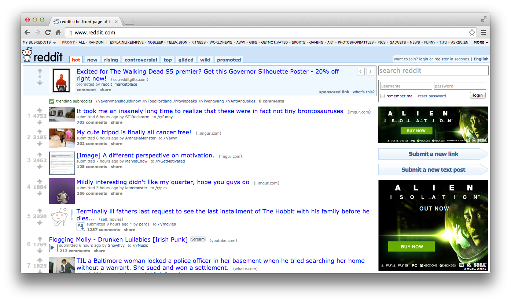</p>

<p>承载 Reddit 网站的服务器处理你的请求并返回给你的浏览器一个响应。你的浏览器足够聪明去处理这个响应，然后将所有的颜色，图片，文字，样式给你展示成上图那样。</p>

<h2>用 HTTP 工具发起 HTTP 请求</h2>

<p>因为浏览器给我们展示的是处理过的服务器响应，我们看不到服务器发给我们的响应的本来面目。怎么样才能看到原始的 HTTP 响应数据呢？</p>

<p>为此，我们可以使用一个 HTTP 工具，就像用浏览器的时候我们输入网址一样，我们可以用 HTTP 工具发送一个请求到 <a href="http://www.reddit.com">http://www.reddit.com</a>。我们的 HTTP 工具，Paw，不会处理响应数据，这样能让我们看到原始的响应数据，大概长这样：</p>

<p>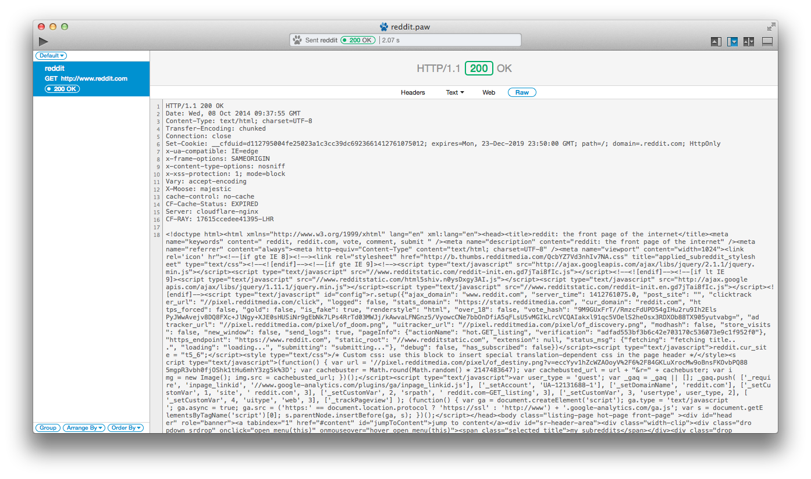</p>

<p>跟你在浏览器里看到的简直就是天壤之别啊！如果你以前从来没见过原始的 HTTP 响应数据，这可能让你有点吃惊。你现在看到的这些，其实就是你浏览器接收到的数据，只不过是浏览器把这一堆数据处理成了人类友好的格式。</p>

<p>如果你学习 HTTP 的知识是为了成为一个 web 开发者，你需要学着阅读原始的 HTTP 响应数据。当然你不用在你的脑海里把这些数据解析成一个高清晰度的画面，但是你应该对这些响应代表着什么有一个整体上的概念。等你有了足够的经验，你就可以深入原始的 HTTP 响应数据去做一些 debug 工作和一探其究竟。</p>

<h2>使用审查器 (Inspector)</h2>

<p>所有现代浏览器都有查看 HTTP 请求和响应的方法，通常都叫做<strong>审查器</strong>。我们使用 <a href="https://developer.chrome.com/devtools">Chrome 审查器</a>，演示一下如何用它来分析你浏览器的 HTTP 通信。</p>

<ol>
<li>打开 Chrome 浏览器，点击右上角的菜单，选择工具，然后选择开发者工具，这样就打开审查器了。</li>
<li>在地址栏输入 <a href="http://www.reddit.com">http://www.reddit.com</a>，来给 Reddit 重新发送一个新的请求。</li>
<li>以上两个步骤要确保审查器开着啊，然后点击 Network 标签: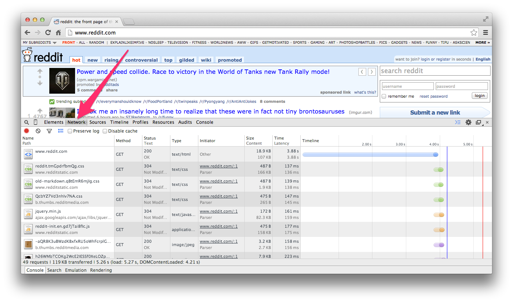</li>
<li>你应该注意的第一件事是，这里会有很多项。每一项都是一个单独的请求，也就是说，仅仅是访问了这一个 URL，你的浏览器就发起了多个请求，一个请求对应着一个资源 （图片，文件等等）。点击一下对主页的第一个请求，就是<code>www.reddit.com</code>那项: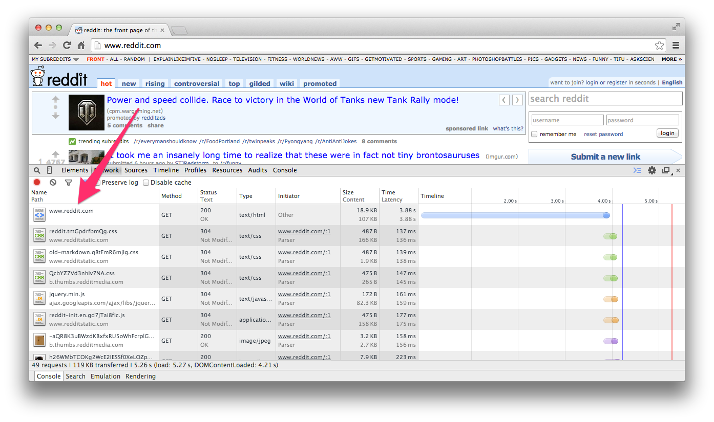</li>
<li>这里，你就能看到特定的请求头部，cookies，还有原始的响应数据: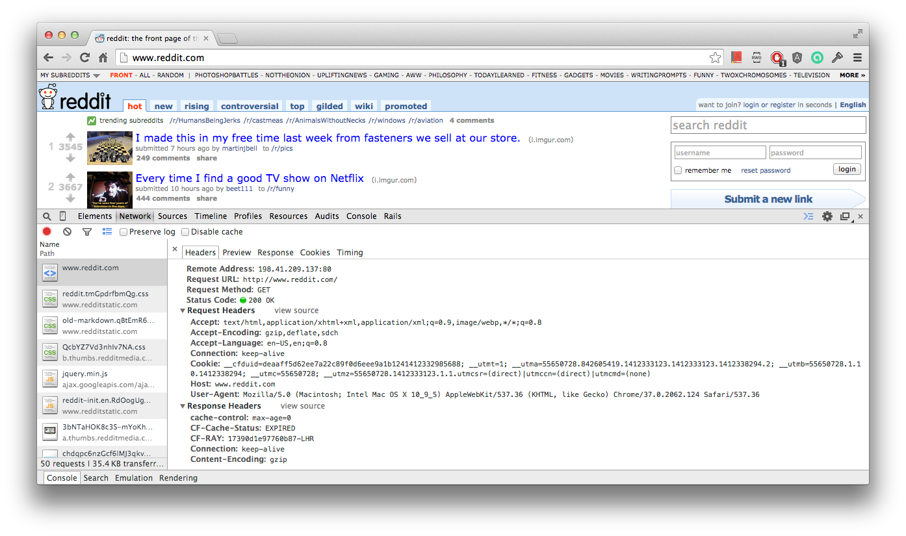 在默认的子标签 <em>Headers</em> 里显示了发给服务器的请求头部和接收到的服务器返回来的响应头部。接下来点击 <em>Response</em> 子标签去看看原始响应数据。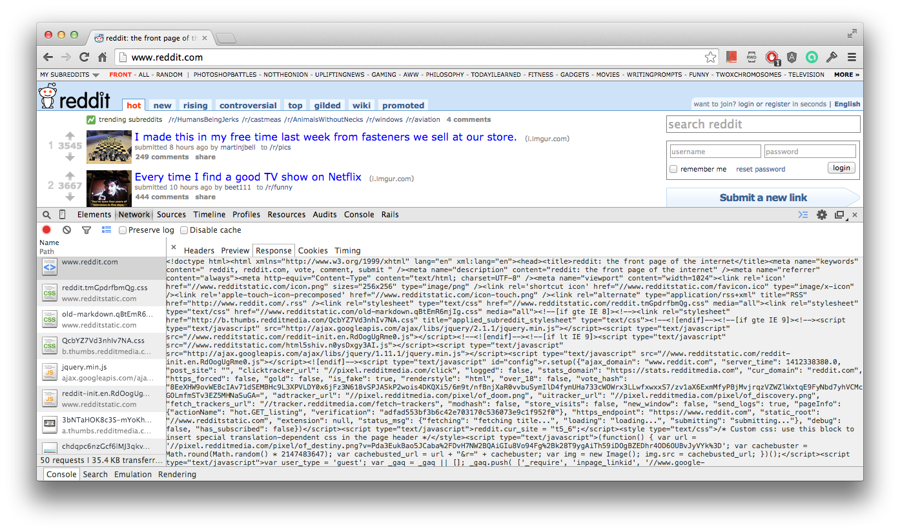
这个响应数据看起来应该跟我们前面使用 HTTP 工具得到的差不多。</li>
</ol>

<p>另一个要注意的事情是，当我们使用审查器的时候，在 <em>Network</em> 标签下，除了第一个请求，还有一堆其他请求的返回：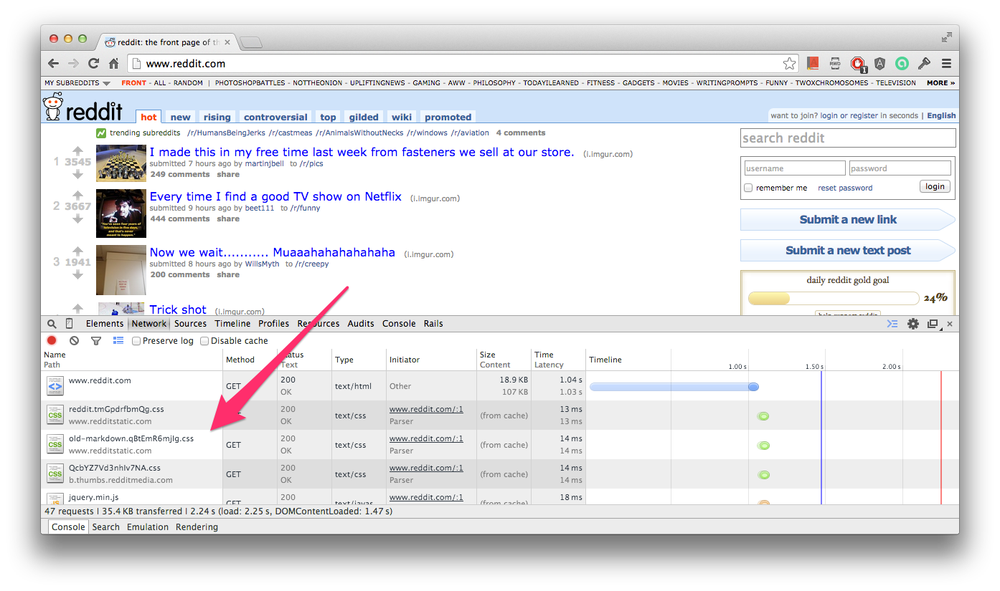</p>

<p>为什么会出现这些额外的响应，谁发起的这些请求？ 事情是这样的，当我们请求资源的时候，最初的对于<code>www.reddit.com</code>的请求，返回了一些 HTML。 这些 HTML 里又引用了其他的资源比如图片，CSS 文件，javascript 文件等等。你的浏览器，很聪明也很给力。它明白，为了展示出一个能够给人看的网页，它必须去把这些引用到的资源也一并拿来. 因此浏览器就会对得到的初次响应里的每一个资源再一一发起请求。当你在 <em>Network</em> 标签里往下滚动页面，你就能看到所有的相关资源。这些其他的请求保证了这个网页和其他一些东西能正常良好的显示在你的屏幕上.整体来看，浏览器的审查器对于相关的引用资源给你了一个良好的体验.另一方面，一个纯粹的 HTTP 工具，只会返回<strong>一个</strong>巨大的响应数据，并不会自动拉取引用的资源.一个用<code>curl</code>发起的请求可以这样写：</p>
<div class="highlight"><pre><span class="err">$</span> <span class="n">curl</span> <span class="o">-</span><span class="n">X</span> <span class="no">GET</span> <span class="s2">&quot;http://www.reddit.com/&quot;</span> <span class="o">-</span><span class="n">m</span> <span class="mi">30</span> <span class="o">-</span><span class="n">v</span>
</pre></div>
<p>然后你看到的应该只是一个请求，一个响应包含着 HTML，但是没有那些你在浏览器里看到的自动发起的额外请求。</p>

<h2>请求方法</h2>

<p>让我们重温一下上面第 3 步里的图，看看 <em>Network</em> 标签里的响应数据。你会发现有这么两列 <strong>Method</strong> 和 <strong>Status</strong> 。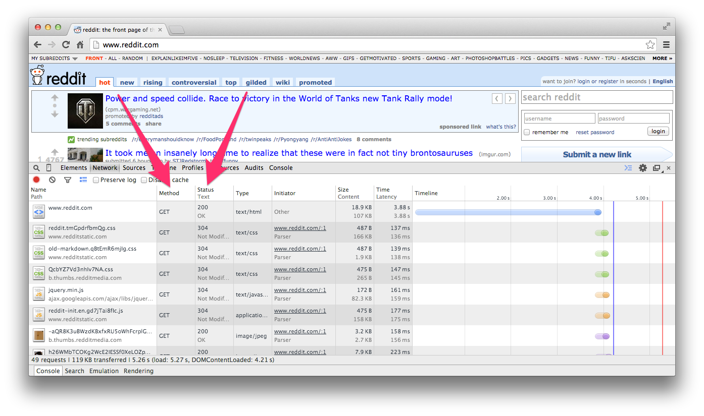</p>

<p>本节我们来看看这几列里的信息是什么意思。</p>

<p>在 <strong>Method</strong> 这一列里的数据呢，就是常说的 HTTP 请求方法 （ Request Method ）。你可以这样想，把这个 Method 当做是一个动词，用来告诉服务器你想对某个资源做什么。最常见的两个 HTTP 请求方法是 <code>GET</code> 和 <code>POST</code> 。当你想要获取信息的时候，使用<code>GET</code>这个最常用的 HTTP 请求方法。在上面那张图你应该能看到，所有使用 <code>GET</code> 的请求，都是为了去拿到那些需要显示在网页上的资源。</p>

<p><strong>Status</strong> 这列显示了每一个请求的响应状态码。在本书的后面章节我们会详细讨论响应。现在你需要理解的是每一个请求都会得到一个响应，哪怕这响应是一个错误响应 -- 那它也是个响应嘛。（这句话其实不是百分百正确，因为有些响应会<strong>超时</strong>，但是现阶段我们不用在意这些细节。）</p>

<h2>GET 请求</h2>

<p><code>GET</code> 请求一般出现在超链接或者浏览器的地址栏里。当你在你的浏览器地址栏里输入类似 <code>http://www.reddit.com</code> 这样的地址的时候，你就是在发起一个 GET 请求。你让浏览器去取这个地址上的资源，这就意味着我们在整本书里一直在使用<code>GET</code>请求。在你点击 web 应用上的超链接的时候也会发生同样的事情。超链接的默认行为就是向一个 URL 发送<code>GET</code>请求。让我们用 HTTP 工具向 <code>http://www.reddit.com</code> 发起一个简单的 <code>GET</code> 请求。要确保你选择了 <code>GET</code> 这一项，然后输入网址: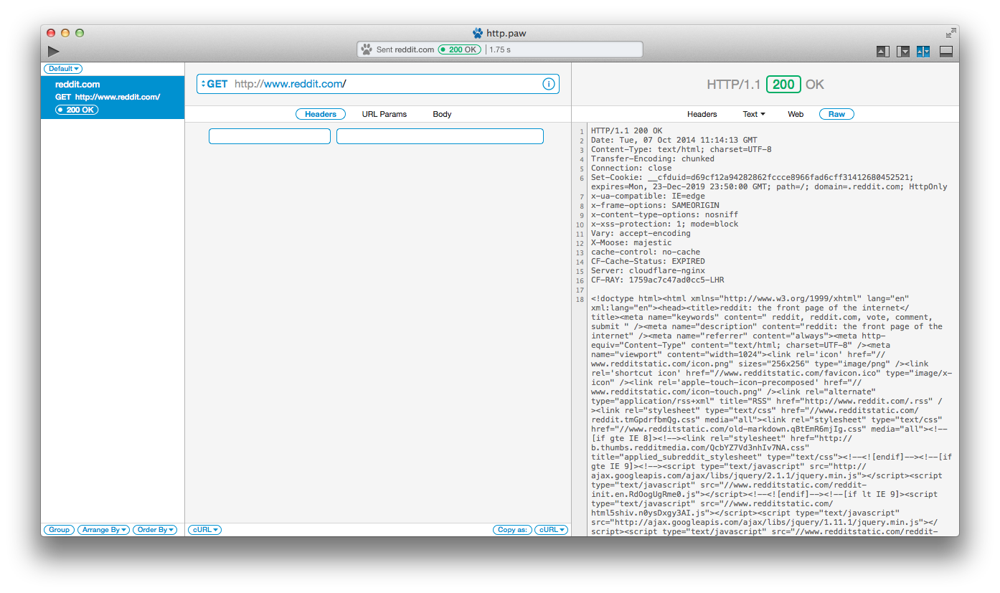</p>

<p>在右边窗口你就能看到服务器发回来的原始 HTTP 响应数据和一些其他信息。</p>

<p>使用 <code>curl</code> 的读者呢，可以在终端里敲入以下命令：</p>
<div class="highlight"><pre><span class="n">curl</span> <span class="o">-</span><span class="n">X</span> <span class="no">GET</span> <span class="s2">&quot;http://www.reddit.com/&quot;</span> <span class="o">-</span><span class="n">m</span> <span class="mi">30</span> <span class="o">-</span><span class="n">v</span>
</pre></div>
<p>我们也可以用 HTTP 工具发送带查询字符串的请求.举个例子，我们发起一个带查询字符串的请求去搜索<code>https://itunes.apple.com/</code>里所有跟<code>Michael Jackson</code>有关的东西.请求使用的 URL 长这样：</p>
<div class="highlight"><pre><span class="ss">https</span><span class="p">:</span><span class="sr">//i</span><span class="n">tunes</span><span class="o">.</span><span class="n">apple</span><span class="o">.</span><span class="n">com</span><span class="o">/</span><span class="n">search?term</span><span class="o">=</span><span class="no">Michael</span><span class="o">%</span><span class="mi">20</span><span class="no">Jackson</span>
</pre></div>
<p>还是那句话，用 Paw 的，发起请求前确保选的是<code>GET</code>。</p>

<p>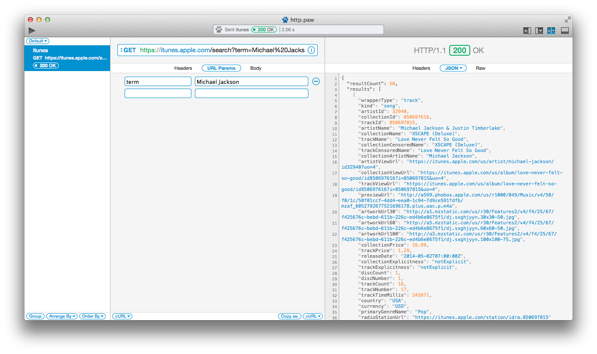</p>

<p>这里我们仅仅是给<code>https://itunes.apple.com/</code>的服务器发送了一个带着参数 <code>term=Michael%20Jackson</code> 的 HTTP <code>GET</code> 请求，其中<code>%20</code>是空格的 URL 编码字符。</p>

<p>这个例子所用的 <code>curl</code> 命令是这样的：</p>
<div class="highlight"><pre><span class="err">$</span> <span class="n">curl</span> <span class="o">-</span><span class="n">X</span> <span class="no">GET</span> <span class="s2">&quot;https://itunes.apple.com/search?term=Michael%20Jackson&quot;</span> <span class="o">-</span><span class="n">m</span> <span class="mi">30</span> <span class="o">-</span><span class="n">v</span>
</pre></div>
<p>以上就是你现阶段需要知道的所有关于发起 HTTP <code>GET</code> 请求的所有知识。主要的概念有以下几点：</p>

<ul>
<li><code>GET</code> 请求经常用于取得一个资源，而且大部分超链接都是 <code>GET</code> 请求。</li>
<li>一个 <code>GET</code> 请求的响应可以是任何东西，但是如果响应是一个 HTML 并且里面引用了其他资源，你的浏览器会自动对这些资源发起请求，而一个纯粹的 HTTP 工具则不会。</li>
<li>使用 <code>GET</code> 请求的时候在大小和安全性上有一些限制。</li>
</ul>

<h2>POST 请求</h2>

<p>我们已经看到了怎么使用 <code>GET</code> 去从一个服务器取得和请求数据，但是如果我们需要给服务器提交一些数据怎办呢？这就要提到另一个非常必要和重要的 HTTP 请求法方法 <code>POST</code> 啦。当你想在服务器上发起某个行动，或者给服务器发送数据的时候，就要用到 <code>POST</code> 了。让我们用 HTTP 工具来举个例子：</p>

<p>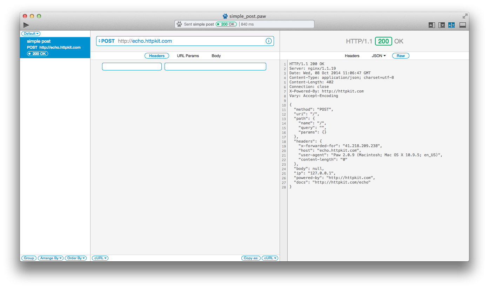</p>

<p>按照惯例给出 curl 命令：</p>
<div class="highlight"><pre><span class="err">$</span> <span class="n">curl</span> <span class="o">-</span><span class="n">X</span> <span class="no">POST</span> <span class="s2">&quot;http://echo.httpkit.com&quot;</span> <span class="o">-</span><span class="n">m</span> <span class="mi">30</span> <span class="o">-</span><span class="n">v</span>
</pre></div>
<p>上面的图片显示了对 <code>http:echo.httpkit.com</code> 发起的 <code>POST</code>请 求和服务器返回的响应。浏览器里的典型 <code>POST</code> 使用案例就是你提交一个表单的时候。<code>POST</code> 请求允许我们向服务器发送更大或者敏感的数据，比如图片或者视频。举个例子，比如我们要把我们的用户名和密码发送到服务器上去做验证。我们完全可以使用 <code>GET</code> 通过附加查询字符串把数据发给服务器。这样做的毛病很明显： 我们的验证信息在 URL 上是可见的。这必然不是我们想要的。在表单提交上使用 <code>POST</code> 请求能够解决这个问题。而且 <code>POST</code> 请求也能避免你使用 <code>GET</code> 请求时的查询字符串长度限制问题。通过 <code>POST</code> 请求，我们可以给服务器发送更大的数据。</p>

<p>我们再来看一个使用 <code>POST</code> 请求提交 web 表单的例子。在浏览器里我们的示例表单长这样：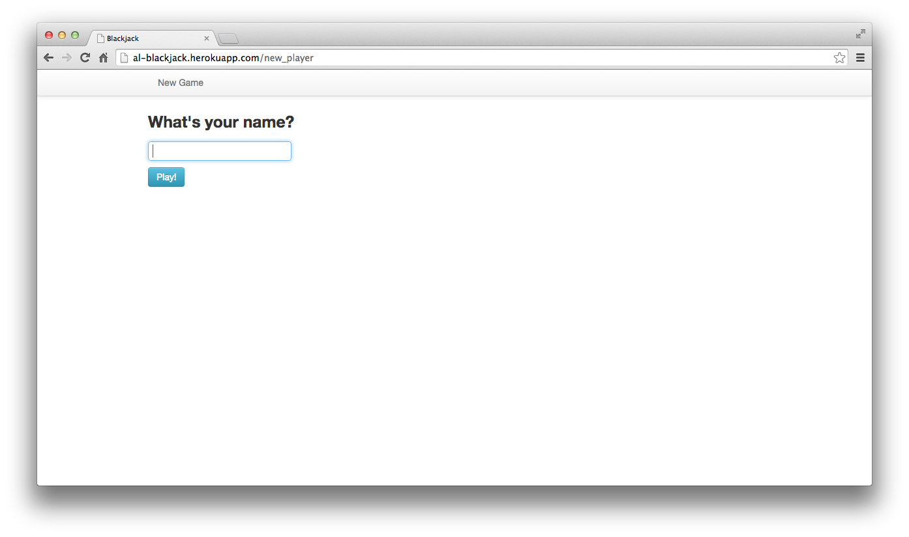</p>

<p>提交表单后，你会被重定向到这样一个页面：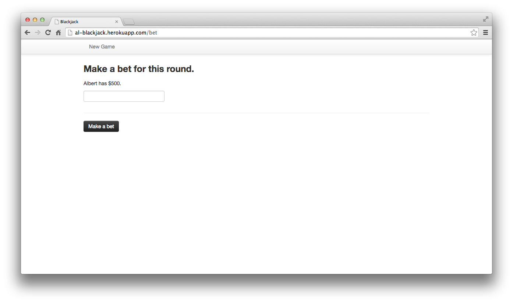</p>

<p>现在让我们切换到我们的 HTTP 工具，来模拟一下我们刚才在浏览器里做的事情。我们要发起一个 <code>POST</code> 请求到 <code>http://al-blackjack.herokuapp.com/new_player</code> 来代替在浏览器里填写表单。下面是我们填写第一个表单（就是那个我们写名字的那个）的方法：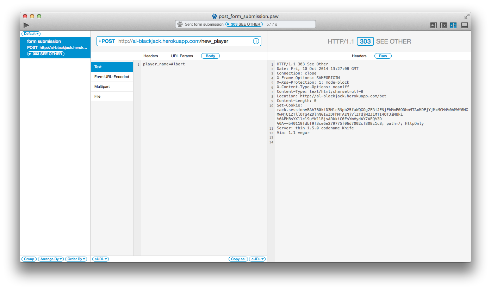</p>

<p>或者用 curl：</p>
<div class="highlight"><pre><span class="err">$</span> <span class="n">curl</span> <span class="o">-</span><span class="n">X</span> <span class="no">POST</span> <span class="s2">&quot;http://al-blackjack.herokuapp.com/new_player&quot;</span> <span class="o">-</span><span class="n">d</span> <span class="s2">&quot;player_name=Albert&quot;</span> <span class="o">-</span><span class="n">m</span> <span class="mi">30</span> <span class="o">-</span><span class="n">v</span>
</pre></div>
<p>注意在图片和 curl 命令里我们都提供了额外的参数： <code>player_name=albert</code> 。 这个跟我们在第一个表单的 “What&#39;s your name?” 输入框里填写内容并提交是一样的。</p>

<p>我们可以使用审查器查看内容 （右键选择<code>审查元素</code>）。你能看到，我们在 <code>POST</code> 请求里发送的参数 <code>player_name</code> 就是这个表单里面 input 元素的 name 属性里的内容：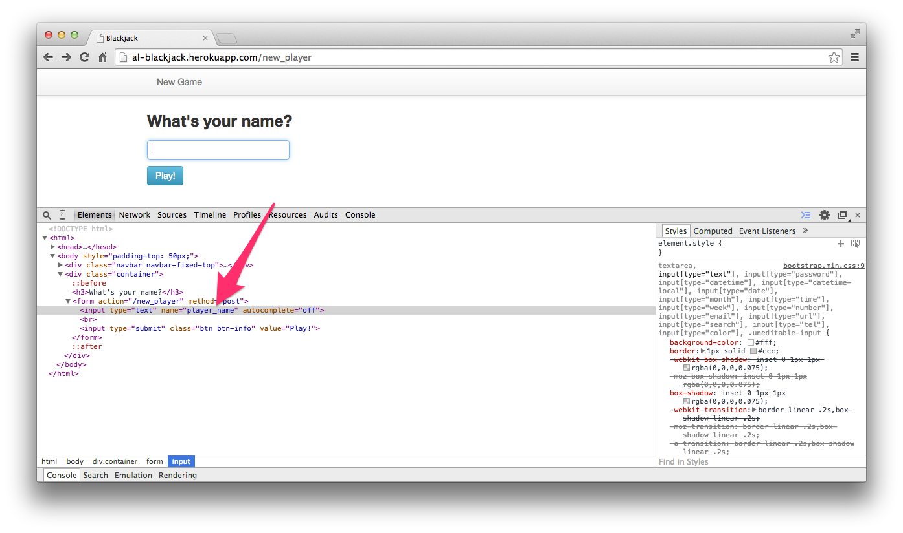</p>

<p>这个的奥秘在于，我们是怎样不通过 URL，仅仅是提交表单就把数据发送到服务器的呢？答案是 HTTP 的正文 （ Body ）。正文包含了正在传输的 HTTP 消息，这个内容是可选的。换句话说就是，可以发送一个没有正文的 HTTP 消息。当你要使用正文的时候，可以包含 HTML，图片，音频等等。你可以把正文看成包裹在信封里发出的信件（译注:URL 就好比是信封上写的地址，是可见的，而信的内容在信封里是不可见的）。</p>

<p>HTTP 工具和 curl 发起的 <code>POST</code> 请求跟你在浏览器里填写表单然后提交是一样的，紧接着我们会被重定向到下一个页面。仔细看看 HTTP 工具的图片，看看里面的原始响应数据，把我们重定向到下一个页面的关键信息在这一行 <code>Location: http://al-blackjack.herokuapp.com/bet</code> 。 <code>Location</code> 和它对应的数据，就是所谓的 HTTP 响应头部里的一部分 （是的，你可能也想到了，请求也有头部，但是在现在这个例子里，这是一个响应头部）。不要太在意这些细节，在后面章节我们会讨论头部。当你的浏览器看到这个响应头部，然后就会自动向 <code>Location</code> 头部里的 URL 发起一个全新的，完全独立的请求。你看到的那个 &quot;Make a bet&quot; 表单，就是这第二个请求的响应内容。</p>

<p>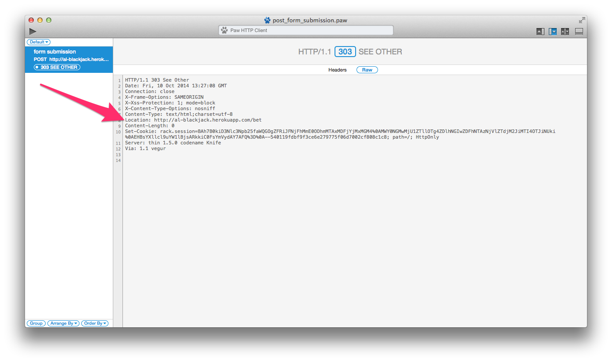</p>

<p>如果你对上面几段内容感到困惑，那就再多看两遍。使用浏览器的时候有一点很重要，那就是浏览器对你隐藏了大量的 HTTP 请求/响应的细节。你的浏览器发起最初的一个 <code>POST</code> 请求，得到了一个包含 <code>Location</code> 头部的响应，然后在不用你参与的情况下发起另一个请求，然后把第二个请求得到的响应内容展示给你。再重申一次，如果你使用的是一个纯粹的 HTTP 工具，你能看到第一个 <code>POST</code> 请求的 <code>Location</code> 响应头部，但是这个工具不会自动发起第二个请求。（有些 HTTP 工具有这个功能，你可以看看 &quot;automatically follow redirects&quot; 选项）</p>

<h2>HTTP 头部</h2>

<p>HTTP 头部允许客户端和服务器在请求/响应的 HTTP 周期里发送额外的信息。头部，通常是以冒号分隔的键值对儿，一般是纯文本格式的。我们可以使用<strong>审查器</strong>来看看这些头部。下面这张图你能看到请求和响应都有头部：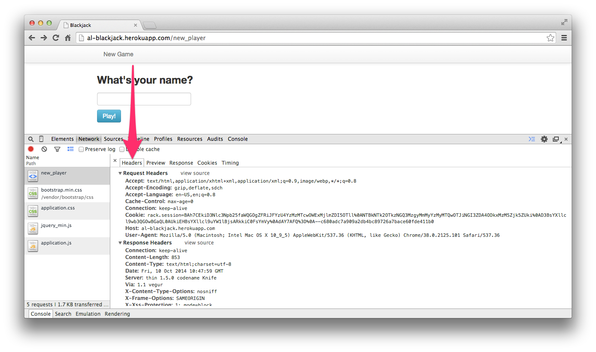</p>

<p>上图显示了在一个请求/响应周期里传递的各种头部。更进一步，在 <code>Request Headers</code> 下面，我们能看到请求和响应包含着不同的头部：</p>

<p>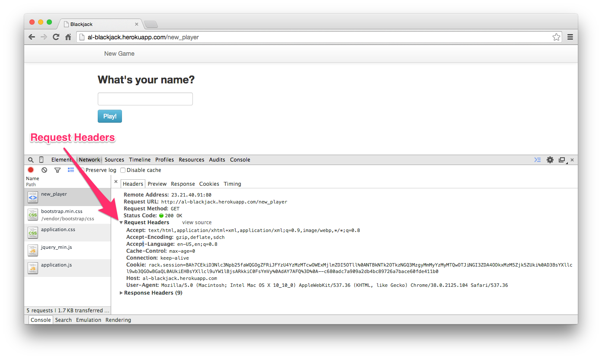</p>

<h2>请求头部</h2>

<p>请求头部提供更多关于服务器和要获取的资源的信息。一些有用的请求头部是:</p>

<table><thead>
<tr>
<th style="text-align: left">字段名</th>
<th style="text-align: left">描述</th>
<th style="text-align: left">举例</th>
</tr>
</thead><tbody>
<tr>
<td style="text-align: left">Host</td>
<td style="text-align: left">服务器域名</td>
<td style="text-align: left">Host:www.reddit.com</td>
</tr>
<tr>
<td style="text-align: left">Accept-Language</td>
<td style="text-align: left">可接受的语言</td>
<td style="text-align: left">Accept-Language: en-US，en;q=0.8</td>
</tr>
<tr>
<td style="text-align: left">User-Agent</td>
<td style="text-align: left">一个标识客户端的字符串</td>
<td style="text-align: left">User-Agent: Mozilla/5.0 (Macintosh; Intel Mac OS X 10_9_5) AppleWebKit/537.36 (KHTML，like Gecko) Chrome/38.0.2125.101 Safari/537.36</td>
</tr>
<tr>
<td style="text-align: left">Connection</td>
<td style="text-align: left">客户端连接的类型</td>
<td style="text-align: left">Connection: keep-alive</td>
</tr>
</tbody></table>

<p>没有必要去记忆任何一个请求头部，但是一定要知道这是发送到服务器请求里的一部分。在下一章我们会讨论响应头部。</p>

<h2>小结</h2>

<p>本章我们做了一个简单的 HTTP 请求介绍。读完本章你应该能熟练应用：</p>

<ul>
<li>使用审查器查看 HTTP 请求</li>
<li>使用 HTTP 工具发起 GET/POST 请求</li>
</ul>

<p>关于 HTTP 请求最终的部分是理解以下内容：</p>

<ul>
<li>URL</li>
<li>参数</li>
<li>头部</li>
<li>消息正文 （在 <code>POST</code> 请求里的）</li>
</ul>

<p>下一章我们将通过学习 HTTP 响应来继续了解 HTTP 。</p>

<h1>处理响应</h1>

<h2>简介</h2>

<p>目前为止我们已经发起了各种各样的请求，也看到了服务器发回的原始 HTTP 数据。服务器返回的原始数据就是所谓的<strong>响应</strong>。本章我们会分析 HTTP 响应里的各种组成部分。</p>

<h2>状态码</h2>

<p>我们要看的第一个组成部分是 HTTP 状态码.<code>状态码</code>是服务器接收到请求后返回的标识请求状态的三位数.在<code>状态码</code>的旁边，就是描述这个状态码的<code>状态文本</code>.一般这些出现在审查器的<code>Status</code>这列: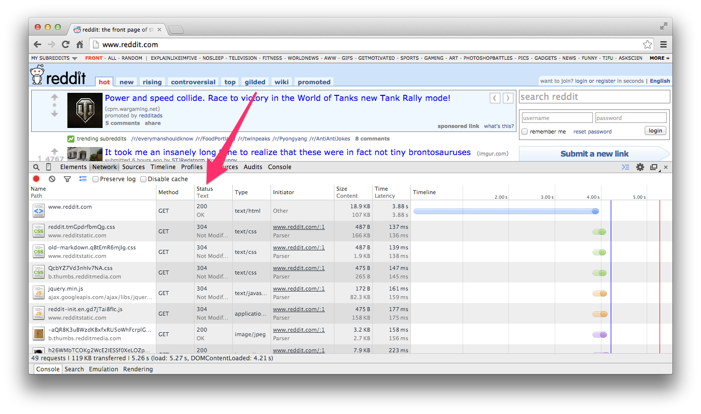</p>

<p>你遇到的最常见的响应状态码应该是 200，意思是请求被正确处理.让我们来看看其他有用的状态码:</p>

<table><thead>
<tr>
<th style="text-align: left">状态码</th>
<th style="text-align: left">状态文本</th>
<th style="text-align: left">含义</th>
</tr>
</thead><tbody>
<tr>
<td style="text-align: left">200</td>
<td style="text-align: left">OK</td>
<td style="text-align: left">请求被正确处理</td>
</tr>
<tr>
<td style="text-align: left">302</td>
<td style="text-align: left">Found</td>
<td style="text-align: left">所请求的资源已暂时更改.通常会重定向到另一个 URL</td>
</tr>
<tr>
<td style="text-align: left">404</td>
<td style="text-align: left">Not Found</td>
<td style="text-align: left">所请求的资源无法找到</td>
</tr>
<tr>
<td style="text-align: left">500</td>
<td style="text-align: left">Internal Server Error</td>
<td style="text-align: left">服务器出现一般性错误</td>
</tr>
</tbody></table>

<p>作为一个 web 开发者，你应该熟知上面的响应状态码和其代表的含义。</p>

<p>让我们来挨个举例看看:</p>

<h2>302 Redirect（重定向）</h2>

<p>当一个资源的位置移动了会发生什么呢？ 最通用的解决方案是把对旧 URL 的请求重新引导到新 URL 上.这种重新引导请求的行为有一个术语叫<code>重定向</code>（ redirect ）。当你的浏览器看到一个 302 响应状态码的时候，他就知道这个资源已经移动到别处了，然后就会自动跳转到 <code>Location</code> 响应头部里指定的 URL 。在本节中，我们会用浏览器和 HTTP 工具来演示重定向。</p>

<p>比如说你想要看 <a href="http://www.github.com/">GitHub</a> 上的账户配置，你就要访问这个链接 <code>https://github.com/settings/profile</code> 。但是，要有访问账户配置页面的权限，你必须先登录。如果你没有登录就访问这个链接，浏览器会把你送到登录页面去。当你填写正确的登录信息后，你就会被重定向到你最早想访问的页面。这个是大多数 web 应用的通用工作流程。让我们看看浏览器和 HTTP 工具是怎么处理这个流程的。</p>

<p>首先你在浏览器里输入 <code>https://github.com/settings/profile</code> 。</p>

<p>因为浏览器很聪明，它会直接按照重定向的指示给你展示出 GitHub 的登录页面: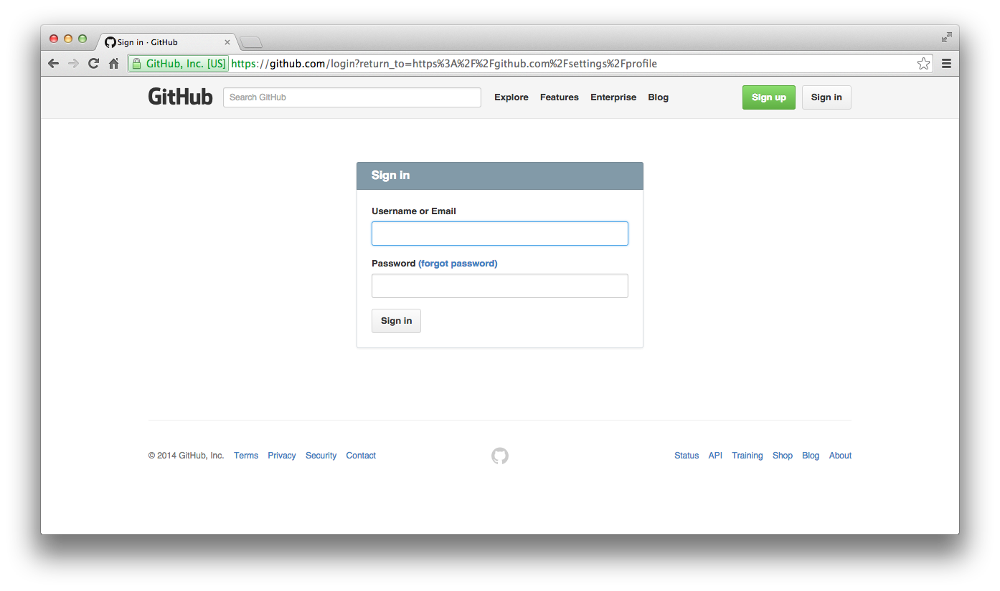</p>

<p>相比之下我们来看看 HTTP 工具 （注意状态码），它并没有自动跟进重定向: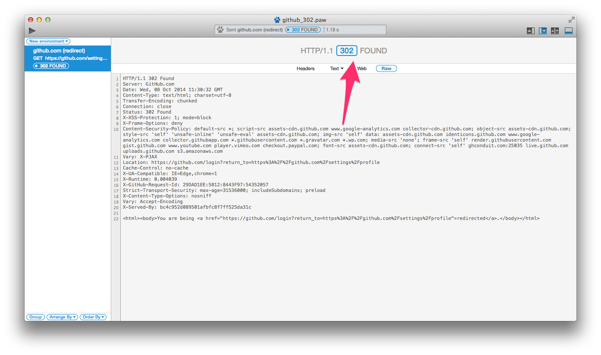</p>

<p>注意这个 <code>Location</code> 响应头部（有点难找到，在第 12 行）。你应该能看到</p>
<div class="highlight"><pre><span class="ss">Location</span><span class="p">:</span> <span class="ss">https</span><span class="p">:</span><span class="sr">//</span><span class="n">github</span><span class="o">.</span><span class="n">com</span><span class="o">/</span><span class="n">login?return_to</span><span class="o">=</span><span class="n">https</span><span class="o">%</span><span class="mi">3</span><span class="n">A</span><span class="o">%</span><span class="mi">2</span><span class="n">F</span><span class="o">%</span><span class="mi">2</span><span class="no">Fgithub</span><span class="o">.</span><span class="n">com</span><span class="o">%</span><span class="mi">2</span><span class="no">Fsettings</span><span class="o">%</span><span class="mi">2</span><span class="no">Fprofile</span>
</pre></div>
<p>这个 URL 里有一个 <em>return_to</em> 参数，它的值就是在登录之后客户端要重定向到的 URL。对比一下浏览器里那张图，你应该能发现，这个 URL 和浏览器地址栏里的 URL 是一样的。</p>

<h2>404 Not Found（未找到）</h2>

<p>接下来，我们看看浏览器里的 404 响应状态码是什么样。当所请求的资源没有找到的时候，服务器会返回这个状态码。要记得，资源可以是任何东西，包括音频文件，CSS 文件，javascript 文件，图片等等。让我们给 <code>http://www.dropbox.com</code> 发一个 <code>GET</code> 请求索要一张图片，<code>https://www.dropbox.com/awesome_file.jpg</code>: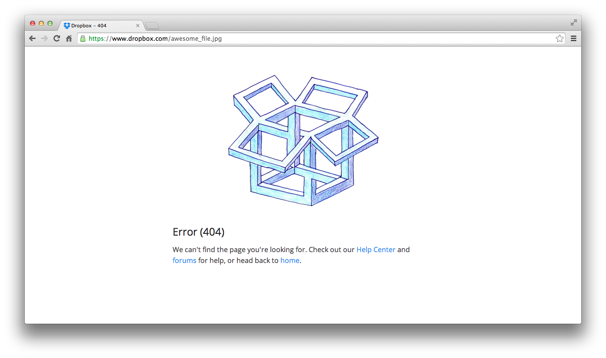</p>

<p>我们看到了 Dropbox 那漂亮的 404 页面。现在让我们在 HTTP 工具里看看同样的请求的响应: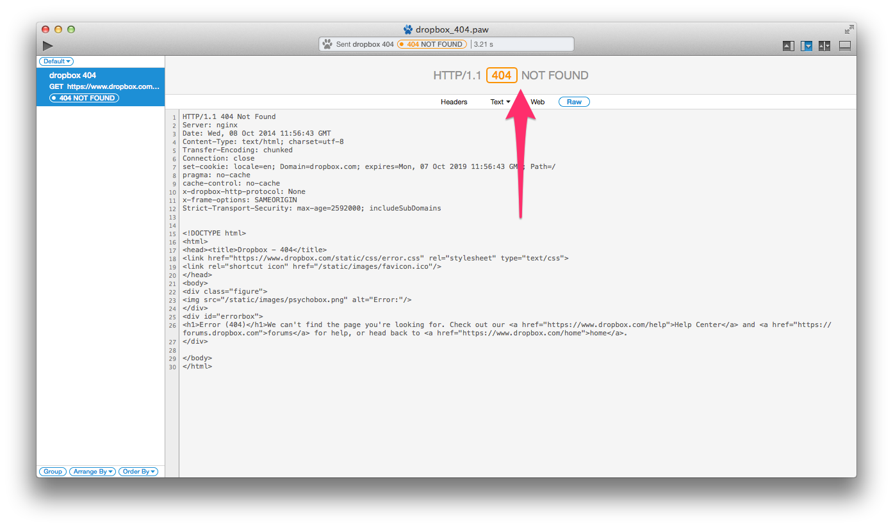</p>

<p>因为我们索要的资源并不存在，浏览器给我们展示了一个格式友好的文字提示，但 HTTP 工具会给我们展示响应状态码和原始响应数据。</p>

<h2>500 Internal Server Error（内部服务器错误）</h2>

<p>一个 500 状态码意思就是&#39;服务器那儿好像出了点儿问题&#39;。 这只是一个一般性的错误状态码，造成这个错误的原因可能是服务器配置，也可能是跑在服务器上的应用里的代码少写个逗号。但是不管是什么问题，总之是服务器端有问题。有服务器访问权限的人必须去调试和解决这个问题，这就是为什么很多含糊的报错信息都会提醒你去联系你的系统管理员。在实际应用上，500 错误也可以像 404 那样以多种多样的形式显示出来。下面就是 rails 应用默认的 500 页面： 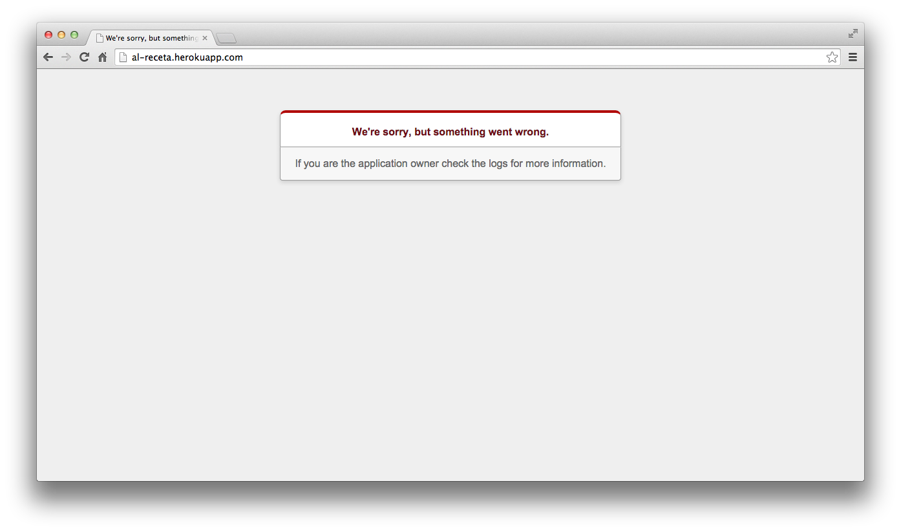</p>

<p>使用 HTTP 工具，我们能看到状态码和原始数据： 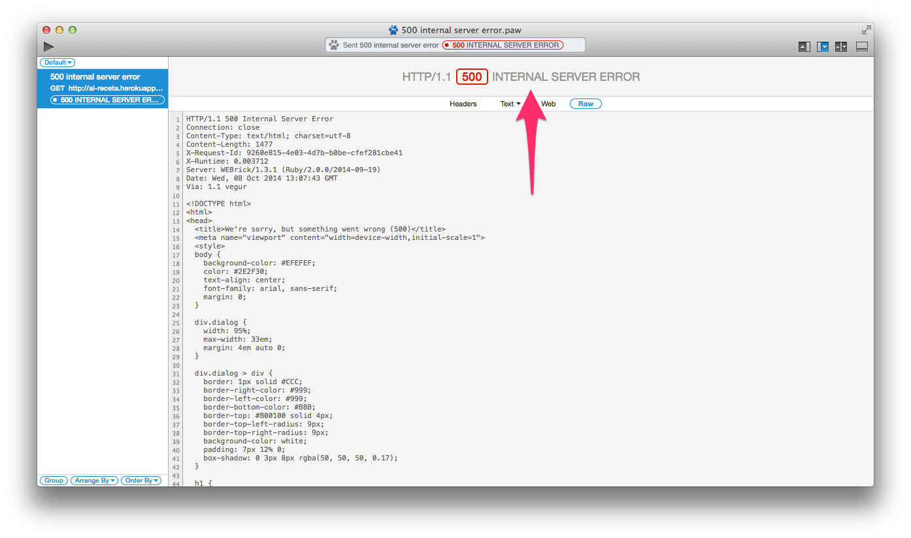</p>

<h2>响应头部</h2>

<p>跟请求头部一样，我们也可以用审查器去看响应头部：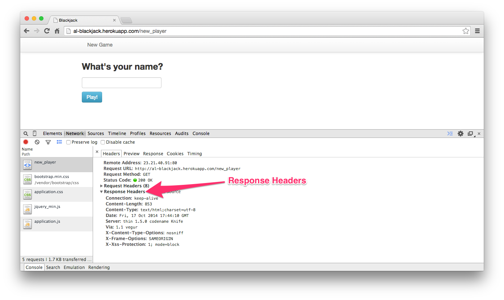</p>

<p>响应头部提供了更多关于服务器返回的资源的信息。让我们来看看一些常见的响应头部:</p>

<table><thead>
<tr>
<th style="text-align: left">头部名称</th>
<th style="text-align: left">描述</th>
<th style="text-align: left">举例</th>
</tr>
</thead><tbody>
<tr>
<td style="text-align: left">Content-Encoding</td>
<td style="text-align: left">数据的编码类型</td>
<td style="text-align: left">Content-Encoding: gzip</td>
</tr>
<tr>
<td style="text-align: left">Server</td>
<td style="text-align: left">服务器的名称</td>
<td style="text-align: left">Server:thin 1.5.0 codename Knife</td>
</tr>
<tr>
<td style="text-align: left">Location</td>
<td style="text-align: left">通知客户端新的资源位置</td>
<td style="text-align: left">Location: http://www.github.com/login</td>
</tr>
<tr>
<td style="text-align: left">Content-Type</td>
<td style="text-align: left">响应数据的类型</td>
<td style="text-align: left">Content-Type:text/html; charset=UTF-8</td>
</tr>
</tbody></table>

<p>还有很多响应头部，但是跟请求头部一样，没有必要去背下来。 响应头部对返回的数据有着微妙的影响，有些情况下，它们巧妙的用于工作流程中（比如，你的浏览器自动跟进 <code>Location</code> 响应头部指向的 URL ）。你需要理解的仅仅是，响应头部包含了一些关于返回的响应数据的额外信息（译注：描述数据的信息/数据，通常被称为为元数据，meta-data or meta information ）。</p>

<h2>小结</h2>

<p>在本章，我们讨论了 HTTP 响应的组成部分。我们也了解了如何使用审查器去查看 HTTP 响应的头部。尽管我们只是揭开了 HTTP 协议面纱的一角，我希望这些知识在你需要的时候能给你 <a href="http://en.wikipedia.org/wiki/Hypertext_Transfer_Protocol">深入研究 HTTP</a> 的能力。</p>

<p>总之，我们已经看到，HTTP 只不过是一个协议，用于指示客户端与服务器之间如何使用某种格式的文本进行通信。</p>

<p>HTTP 响应中最重要的部分如下:</p>

<ul>
<li>状态码</li>
<li>头部</li>
<li>消息正文，里面有原始响应数据</li>
</ul>

<p>试试看，在下面这个图里你能不能找到上面那几个部分都在哪儿:</p>

<p></p>

<h1>有状态的 web 应用</h1>

<h2>简介</h2>

<p>HTTP 协议是无状态的。换句话说，在你的各次请求之间，服务器是不会保留你的 “状态” 信息。</p>

<p>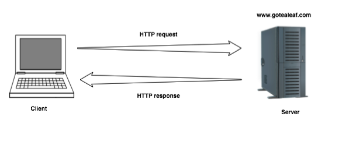</p>

<p>每一次请求都被认为是一次全新的请求，不同的请求之间并不知道对方的存在.这种” 无状态性 “使得 HTTP 和互联网都是 “去中心化” 的，不会轻易被人掌控。 但也是因为这种属性，使得 web 开发者在开发有状态的 web 应用时十分的困难。</p>

<p>当我们看看我们熟悉的 web 应用，我们会觉得这些应用大都是有状态.比如，我们登录到 Facebook 或者 Twitter ，会看到我们的用户名显示在网页上方，这表示我们的目前状态是通过了身份验证。如果我们在页面上随便点点（对服务器发起新的请求)，我们并不会突然就退出登录了。 服务器返回的响应页面里依然有我们的用户名显示着，这样看来这些应用似乎都会维持它们的状态。</p>

<p>在本章，我们会通过讨论一下这是怎么回事，看看 web 开发者常用的实现 “有状态” 体验的技术手段。同时，也会讨论一些用于高效展示动态页面信息的技术。会讨论以下技术:</p>

<ul>
<li>会话（ session ）</li>
<li>Cookies</li>
<li>异步 javascript 调用（ AJAX ）</li>
</ul>

<h2>一个有状态的应用</h2>

<p>让我们来看一个有状态的应用。当你发起一个请求到<code>http://www.reddit.com</code>的时候，主页是这样的:</p>

<p></p>

<p>然后输入你的用户名和密码进行登录：</p>

<p>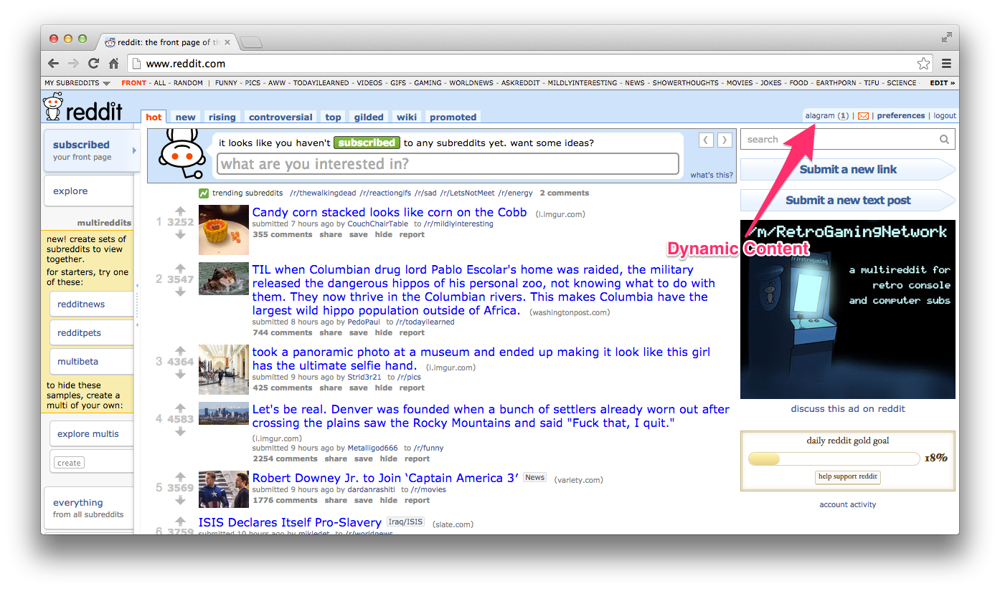</p>

<p>登录后，在页面上方你就会看到你的用户名，表示你已经成功通过身份验证。如果你刷新页面，就会向<code>http://www.reddit.com</code>服务器发起一个新的请求，你会看到，页面还是那个样子，你的登录状态还在。这是怎么回事呢？ HTTP 不是一个无状态协议么？服务器是怎么知道你的用户名，并动态显示在页面上的？哪怕刷新页面发起新的请求也不影响你的登录状态。这种情况非常常见，我们都习以为常了。 这就是你的网络购物车在你往里加新商品的时候如何保留着你之前的选择，有时候哪怕过了几天，你也能看到你购物车里的东西。这就是 Gmail 如何认出你，并在页面上显示针对你名字的欢迎信息，所有的现代 web 应用都是这样工作的。</p>

<h2>会话 （ session ）</h2>

<p>显然，人们可以把这个无状态的 HTTP 协议通过某种方式保持状态。在客户端（一般就是指浏览器）的帮助下，HTTP 的行为会让人觉得它会在客户端与服务器之间维护一个有状态的连接，尽管实际并没有。达到这种效果的一个办法就是， 服务器在发送响应数据给客户端的时候带一个唯一的令牌（英文叫 token，就是一串数）。随后不论何时客户端向服务器发起请求的时候都把这个令牌附加在后面，让服务器能够辨识这个客户端。在 web 开发领域我们把这个来回传递的令牌叫做会话标识符（ session identifier ）。</p>

<p>这种在客户端与服务器之间传递<code>会话 id</code>的机制，能让服务器创建一种各次请求之间的持续连接状态。Web 开发人员利用这种人造的状态，来构建复杂的应用程序。即使这样，每一个请求严格上来说还是无状态的，各次请求之间并不知道彼此的存在。</p>

<p>这种人造状态，会有几个后果。第一，必须检查每个请求，查看它是否包含会话标识符。第二，如果请求有会话标识符，也就是有一个会话 id，服务器必须检查每一个会话 id ，确保这些会话 id 是没有过期的，也就是服务器需要维护一些关于如何处理会话过期，如何存储会话数据的规则。第三，服务器要基于这个会话 id 取出这个会话的数据。最后，服务器要根据取出的会话数据重新创建应用程序的状态（ 比如，一个请求对应的 HTML )，然后将其作为响应返回给客户端。</p>

<p>这就意味着服务器必须非常辛勤的工作，来模拟这个有状态的用户体验。每一个请求都会有一个独立的响应，哪怕这次的响应跟前一个响应没有任何区别。举个例子，如果你登录到 Facebook 上，服务器会给你一个响应，生成你看到的主页。这个响应是一个十分复杂的 HTML 页面。Facebook 的服务器会把页面上所有照片和留言的赞和评论都组合起来，然后显示在你的时间线上。生成这样一个页面的成本非常高。现在，如果你点了某个照片下面的” 赞 “链接，理论上，Facebook 会重新生成整个页面，它会把你赞过的照片的被赞数加 1，然后把整个 HTML 作为响应返回给你，尽管除了这个赞数以外大部分内容都没有改变。 庆幸的是，实际中 Facebook 使用 Ajax 代替了全页面刷新。不然的话，刷新一个页面会花费很长时间。</p>

<p>服务器使用了很多先进的技术来优化会话和实现安全机制，不过这些话题都超出了本书的范围，暂且放下。现在我们来聊一个常用的存储会话信息的方法: 浏览器 cookie 。</p>

<h2>Cookies</h2>

<p>cookie 就是在一个请求/响应周期内，服务器发送给客户端（通常就是浏览器），并存储在客户端的一段数据。Cookies 或者 HTTP cookies，就是存储在浏览器里包含着会话信息的小文件。默认情况下，大部分浏览器的 cookies 都是启用的。当你第一次访问一个网站的时候，服务器会给你发送会话信息并将其存储在你本地电脑浏览器的 cookie 里。要注意的是真正的会话数据是存在服务器上的。在客户端发起每一个请求的时候，服务器就会比对客户端的 cookie 和服务器上的会话数据，用来标识当前的会话。通过这种方法，当你再次访问同一个网站的时候，服务器就会通过 cookie 和里面的信息来认出你的会话。
</p>

<p>我们来看一个真实的案例。用审查器看看 cookies 是如何被创建的。我们要向<code>http://www.yahoo.com</code>发起一个请求。要注意的是，如果你的浏览器里已经有了 Yahoo 的 cookie ，你可能需要换一个网站。</p>

<p>保持审查器打开（页面上右键，点击 “查看元素 “），输入这个网址，然后看看我们的请求头部：</p>

<p>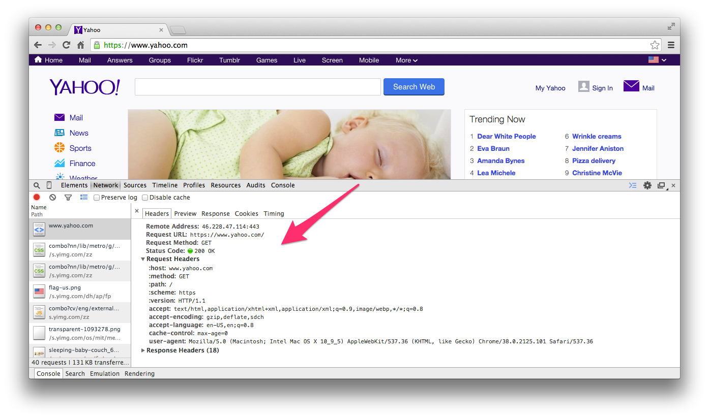</p>

<p>注意，里面没有任何有关 cookies 的东西，接下来我们看看响应头部：</p>

<p>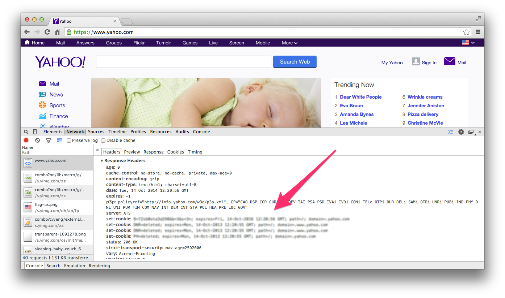</p>

<p>你会看到有个<code>set-cookie</code>头部把 cookie 数据加到响应里。 在首次访问这个网站的时候这个 cookie 数据会被设置。最后，我们发起一个相同的请求然后再来看看请求头部：</p>

<p>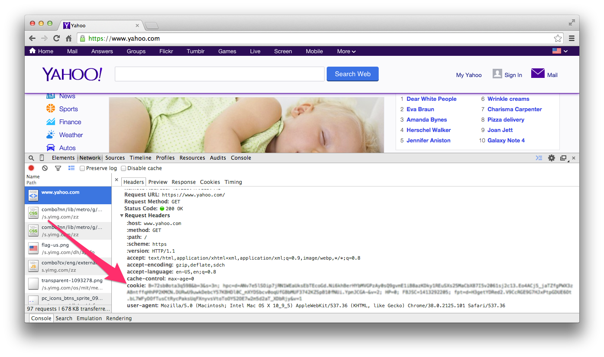</p>

<p>你会看到有个<code>cookie</code>头部出现了（注意这个是请求头部，就是说这是要从你的客户端发送到服务器的）。 里面的内容是上一个响应头部<code>set-cookie</code>的值。这一小段数据，会出现在你每一个发起的请求里，用来唯一标识你 --- 或者说的清楚点， 标识你的客户端，也就是你的浏览器。cookie 是存在浏览器里的。现在，就算你关掉浏览器，关掉电脑， cookie 里的信息也不会消失的。</p>

<p>现在让我们回到本章最初的那个例子，关于 Reddit 和其他 web 应用是如何在我们发起的一个又一个请求中记住我们的登录状态。记住，每一个请求都是独立的， 不知道彼此存在的。 那么问题来了，应用程序是如何 “记住” 我们的登录状态呢？如果你要跟着做， 保持审查器打开，然后按照下面的步骤来：</p>

<ol>
<li>点击 resources 标签然后访问<code>http://www.reddit.com</code></li>
<li>把 cookies 那部分展开， 然后点击<code>www.reddit.com</code>，你就能在 value 那一列看到第一次发起请求后服务器返回给我们的 cookie 了: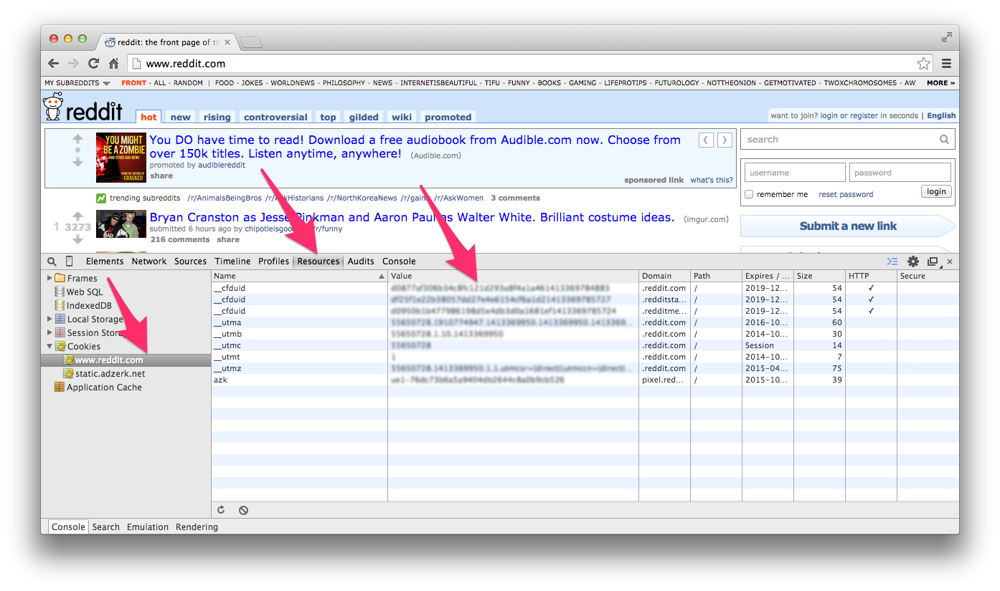</li>
<li>然后登录，你应该能看到在最后一行出现了一个唯一的会话 id 。这个会话 id 会存在你浏览器的 cookie 里，从此后你每一个到 Reddit.com 的请求都会附上这个会话 id 。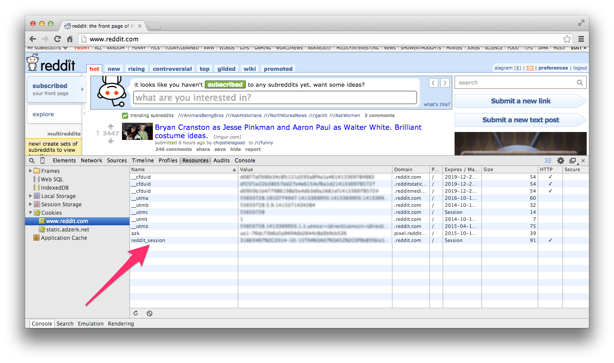</li>
</ol>

<p>现在每一个请求都会包含这个会话 id ，这样服务器就能唯一确认你这个客户端啦。当服务器接收到一个带有会话 id 的请求，它就会根据这个 i d 去找对应的数据，在这个对应的数据里就有服务器&quot;记住&quot;的客户端的状态，或者说就是这个会话 id 的状态。</p>

<h3>会话数据存在哪里？</h3>

<blockquote>
<p>一句话：服务器上的某个地方。有时候，存在内存里，其他时候，可能会存在某个持久化存储介质上，比如数据库或者键 / 值存储。会话数据存在哪里不是我们现在需要关心的。现在重要的是要理解会话 id 存储在客户端，它是访问存储在服务器上的会话数据的 “钥匙”。web 应用就是这样解决 http 无状态这个问题的。</p>
</blockquote>

<p>还有一点非常重要，在一个会话里发出的会话 id 是唯一的，而且有一个很短的过期时间。对上面的例子来说，在会话过期后你需要重新登录。如果我们退出登录， 会话 id 就会消失。</p>

<p>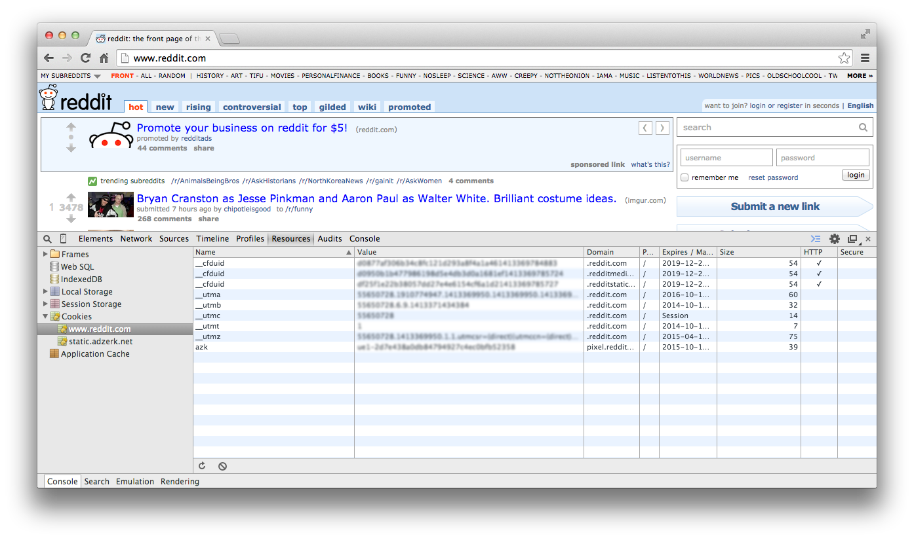</p>

<p>如果你手动删掉会话 id 也是同样的效果（在审查器里，右键 cookies 然后删除它），这样就退出登录了。</p>

<p>简单回顾一下，会话数据是由服务器生成并存储在服务器上，会话 id 以 cookie 的形式发送到客户端上。我们还看到了 web 应用程序如何充分利用这些来模拟在 web 上的有状态体验。</p>

<h2>AJAX</h2>

<p>最后，我们来简单看看 AJAX 和它在 HTTP 请求/响应周期里的作用.AJAX 是”异步 javascript 和 XML “ 的简称（ Asynchronous JavaScript and XML ）。它的主要特点就是允许浏览器发送请求和处理响应的时候不用刷新整个页面。举个例子，如果你登录到 Facebook 上，服务器会给你一个响应，生成你看到的主页。 这个响应是一个十分复杂的 HTML 页面。Facebook 的服务器会把各种信息组合起来，显示在你的时间线上。在前面的讨论中，我们知道，为每一个请求都重新生成一次页面的成本是非常高的（记住，你的每一个动作，点个链接，提交个表单，都会发起一个新的请求）。</p>

<p>当使用 AJAX 的时候，所有客户端发送的请求都是异步的，就是说页面不会刷新。举个例子，当我们在 google 上搜索的时候：</p>

<ul>
<li>访问 Google 主页<code>http://www.google.com</code>，然后打开审查器，看 Network 标签，里面内容是空的。 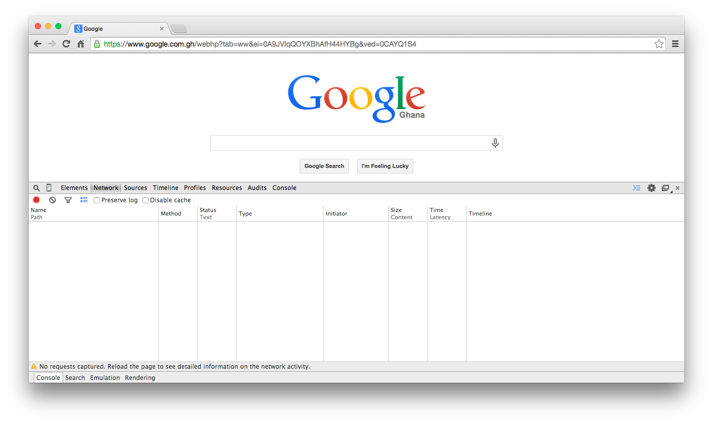</li>
<li>当你开始搜索的时候，你会在 Network 标签看到请求如潮水般发起。 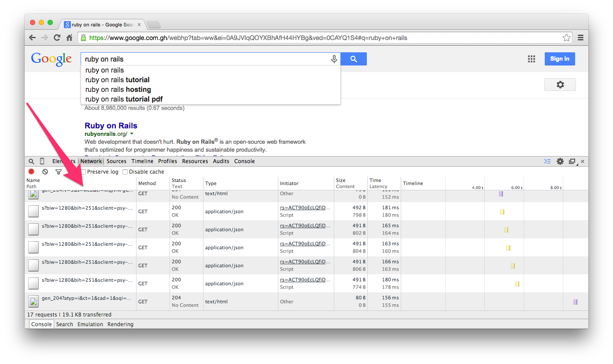</li>
</ul>

<p>很明显发起了很多请求，但是你应该能注意到，页面没有整个刷新。 然而这个 Network 标签的内容让我们看清： 每敲一个字都会发起一个新的请求，也意味着你每按一下键都会触发一个 AJAX 请求。这些请求的响应会通过一些回调来处理。你可以这样理解<code>回调</code>，就是你把一些逻辑存放在某个函数里，当某个条件被触发之后再回来执行你前面存放的逻辑。在本例中，当响应返回的时候，回调就会被触发。你可能已经猜到了，回调函数会用新的搜索结果去更新网页上的 HTML 。</p>

<p>我们不去深究回调到底是什么样的或者如何发起一个 AJAX 请求。最主要的一点要记住的是，AJAX 请求就像是普通请求：发送到服务器的请求依然跟普通请求一样有着一个 HTTP 请求该有的所有组成部分，并且服务器处理 AJAX 请求的方法跟处理普通请求也是一样的。唯一不同就是，不是通过浏览器刷新来处理响应，而通常由客户端的一些 javascript 代码来处理。</p>

<h2>小结</h2>

<p>本章我们介绍了一些 web 开发者用来在无状态的 HTTP 协议上构建有状态应用的技术。你学习了 cookie 和会话，以及现代 web 应用如何记住客户端的状态。也使用审查器了解了 cookies 和会话 id 。最后，了解了 AJAX 在 web 应用里展示动态内容时所扮演的角色。</p>

<h1>安全</h1>

<p>正如我们在这本书中反复指出的， HTTP 的特性让它不容易被居心叵测的人控制，但是同样使得让 http 变得非常安全变得富于挑战性。现在你知道 Web 应用如何优雅的解决了 HTTP 无状态的问题，但是也可想而知还是有一些安全问题需要注意。举个例子，如果有人把我浏览器里的会话 id 偷走，他是不是就能用我身份登陆了？或者当我访问别的网站的时候，它们会不会窥视我 Reddit 和 Facebook 的 cookie 里存储的一些信息，比如会话 id ？本章我们就来讨论一下常见的 HTTP 安全问题。</p>

<h2>安全的 HTTP（HTTPS）</h2>

<p>在客户端和服务器互相发送请求和响应的时候，所有的请求和响应里的信息都是通过明文字符串发送的。如果一个恶意的黑客连接到同一网络，他就可以利用数据包嗅探技术来读取来回发送的消息。正如我们已知道的，请求可以包含会话 id ，它唯一地标识你到服务器之间的联系，所以如果别人复制了这个会话 id ，他们可以手动创建到服务器的请求，伪装成你的客户端，甚至都不需要你的用户名和密码就可以自动登陆。</p>

<p>这种情况就需要安全的 HTTP 也就是 HTTPS 来帮忙啦。通过 HTTPS 访问资源的时候，通常以 <code>https://</code> 开头而不是 <code>http://</code> ，而且通常在边上都会有个小锁子的图标： </p>

<p>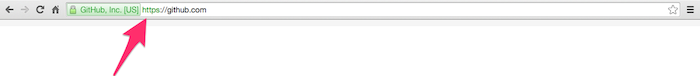</p>

<p>通过 HTTPS 发送的请求和响应在发送前都会被加密。这意味着如果一个恶意的黑客监听 HTTP 通信，他得到的信息都是加密的和无用的。HTTPS 通过一个叫做 <a href="http://en.wikipedia.org/wiki/Transport_Layer_Security">TLS</a> 的加密协议来加密消息。在 TLS 开发完成前，早期 HTTPS 使用 <code>SSL</code> （ Secure Sockets Layer ）。这些加密协议在加密数据之前，需要先使用证书来与远程服务器进行通信来交换安全密钥。你可以点击 <code>https://</code> 前面那个小锁子的图标来查看这些证书：</p>

<p>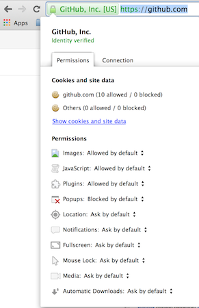</p>

<p>在与一个网站进行交互之前，大多数现代浏览器都会替你对网站的证书做一些检查，但是有时候自己手动查看一下证书也可以作为一个额外的安全保障。</p>

<h2>同源策略（ Same-origin policy ）</h2>

<p>同源策略是一个重要的概念，它允许来自同一站点的资源进行互相访问而不受限制，但是会阻止其他不同站点对文档/资源的访问。换句话说它可以阻止另一个站点通过脚本来操纵本站点的文档。同源的文档必须有相同的协议，主机名和端口号。举个例子，<code>http://www.test.com/aboutus.html</code> 上的 HTML 文档可以嵌入 <code>http://www.test.com/fancy.js</code> 这个 javascript 文件，因为它们是同源的，有相同的协议，主机名和端口号(默认的 80) 。</p>

<p>反过来说，这就意味着 <code>http://www.test.com</code> 上的文档不能嵌入 <code>http://www.example.com</code> 上的文档，因为它们不是同源的。</p>

<blockquote>
<p>同源策略涉及的是访问文件内容，而不是链接，你可以随意链接到任何 URL。</p>
</blockquote>

<p>虽然这样很安全，但是有时 web 开发人员需要进行跨域的内容访问就会很麻烦，所以就有了跨域资源共享技术 CORS 。 CORS 是一种机制，允许我们绕过同源策略，从一个域名向另一个域名的资源发起请求。CORS 的原理是添加新的 HTTP 头部，来对一些域名授权，那这些域名就可以发起对本页面资源的请求。</p>

<p>同源策略是防范会话劫持（见下一节）的重要手段，并作为 web 应用安全的基石。下面让我们来看一些 HTTP 的安全威胁和其对应的防范措施。</p>

<h2>会话劫持（ Session Hijacking ）</h2>

<p>我们已经知道，会话在维持 HTTP 的状态上扮演着重要的角色。我们也知道会话 id 作为一个唯一的令牌来唯一标识一个会话。通常，会话 id 是作为 cookie 存储在计算机上的一个随机字符串. 会话 id 随着每一个到服务器的请求被送往服务器用于唯一标识这个会话。事实上，这也就是很多 web 应用的用户认证系统所在做的事情，当用户的用户名和密码匹配之后，会话 id 会存储在用户的浏览器里，这样他们的下一个请求就不用重新认证了。</p>

<p>不幸的是，如果一个攻击者拿到了这个会话 id ，他就会跟用户共享这一个会话，同时也就能访问这个 web 应用了。在会话劫持攻击中，用户根本意识不到一个攻击者甚至不用知道她的用户名和密码就可以访问她的会话了。</p>

<h2>会话劫持的对策</h2>

<ul>
<li>一个比较流行的会话劫持防范措施是重置会话。也就是对于一个用户认证系统来说，一次成功的登录包括验证旧的会话 id 和生成一个新的会话 id 。完成此步骤后，在下一个请求里，会要求受害者进行身份验证。然后会话 id 就会改变，这样攻击者就无法访问到这个会话了。很多网站都采取这种办法，当用户在进行敏感操作的时候保证用户身份的正确性，比如给信用卡充值或者删除账户的时候。</li>
<li>另一个很有用的方法是给会话设置过期时间。那些不会过期的会话给了攻击者太多的时间去伪装成一个合法用户。如果设置了过期时间，比如 30 分钟，这样一来攻击者就不会那么从容的进行攻击了。</li>
<li>最后，其实我们已经讲过了，另一个办法就是整站使用 HTTPS 把攻击者能得到会话 id 的可能性降至最低。</li>
</ul>

<h2>跨站脚本攻击 (XSS)</h2>

<p>我们最后要讨论的这个安全问题，对所有 web 开发者来说都很重要，叫做跨站脚本攻击或者 <strong>XSS</strong> 。当你允许用户输入的 HTML 和 javascript 在你自己的网站上直接显示的时候，就有可能遭受这种攻击。</p>

<p>举个例子，下面这个表格允许你输入评论，然后把评论直接显示在网页上:</p>

<p>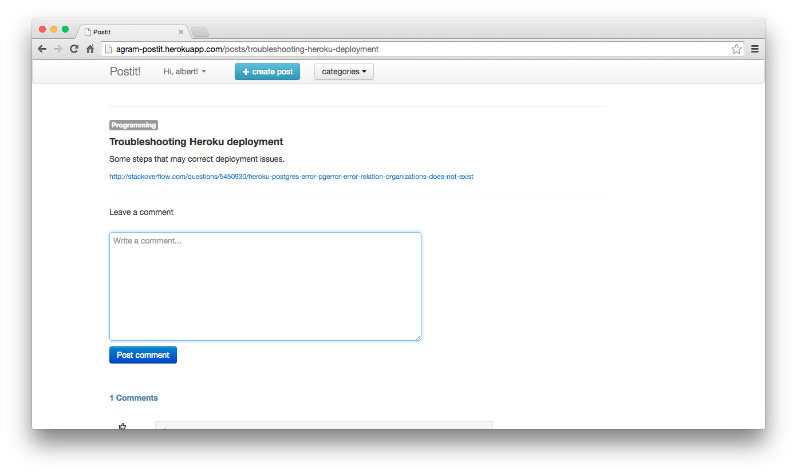</p>

<p>因为这是一个普通的 HTML 文本框，所以用户可以在里面输入任何东西。也就意味着用户可以直接输入原始的 HTML 和 javascript 代码，并把它提交给服务器：</p>

<p>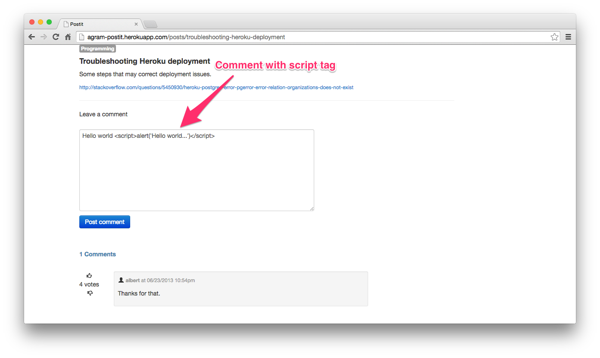</p>

<p>如果服务器端对于用户的输入不做任何无害处理的话，这些内容就会注入到网页的内容中去，然后浏览器就会解释执行这些 HTML 和 javascript 代码。在本例中会弹出一个警告框，这当然不是我们想要的结果。恶意用户可以使用 HTML 和 javascript 代码对服务器或者以后访问这个页面的用户发起毁灭性的攻击。举个例子，一个攻击者可以使用 javascript 代码去获取所有在他之后访问这个页面的用户的会话 id ，然后伪装成其他用户。而这一切都发生在受害者一无所知的情况下。而且要注意的是，这种攻击也能绕过同源策略，因为这段恶意代码是存在于当前这个网站上的。</p>

<h2>跨站脚本攻击的解决方案</h2>

<ul>
<li>阻止此类攻击的一个办法就是总是对用户输入的内容做无害处理。消除有问题的输入，比如<code>&lt;script&gt;</code>标签，或者使用一个更安全的输入格式，比如 Markdown，这样就可以阻止 HTML 和 javascript 同时出现在用户的输入里。</li>
<li>第二个办法就是在显示之前转义用户输入的所有数据.如果你需要用户能够输入 HTML 和 javascript 代码，那么当你显示这些输入内容的时候要确保它们被正确转义，这样浏览器就不会把它们当做代码给执行了。</li>
</ul>

<h2>小结</h2>

<p>本章，我们讨论了 web 应用关于安全的诸多方面。不消说，这是一个宽泛的话题，我们只是蜻蜓点水一般掠过几个常见问题而已。本章的主要目的是展示一下在 HTTP 之上开发出的 web 应用是多么的脆弱，和确保一个 web 应用的安全性是多么的困难。</p>

<h1>祝贺你</h1>

<p>祝贺你看完了这本书！ HTTP 是整个互联网的核心，所以从 HTTP 开始学习 web 开发是一个很好的起点。理解 HTTP 和诸如 <code>GET</code>，<code>POST</code>，会话，cookies 还有“无状态”是什么意思是必不可少的。理解 HTTP 的基础就意味着在你构建一个 web 应用的时候你了解“在屏幕后面”发生着些什么事情。
学习 web 安全相关的知识意味着你要提防安全威胁比如 <code>XSS</code>，会话劫持等，还要了解对抗这些威胁的策略。
如果这是你第一次学习 HTTP，书里的某些章节你最好多读两遍。当你学习一个新的东西的时候，重读，复习和探索都是正常的，我们也鼓励你使用其他资源加深你对所学知识的理解。
虽然这本书没有对 HTTP 进行全面讨论，我们希望本书的知识能成为你 web 开发者职业道路上的坚实基础。</p>

<h1>最后一个请求</h1>

<p>如果你觉得这本书很不错，请让更多的人知道它。</p>

			          	</article>
			        </div>
					</div>
	      </body>
	    </html>
			<script type="text/javascript" src="toc/js/jquery-1.4.4.min.js"></script>
			<script type="text/javascript" src="toc/js/jquery.ztree.all-3.5.min.js"></script>
			<script type="text/javascript" src="toc/js/ztree_toc.js"></script>
      <script type="text/javascript" src="toc/toc_conf.js"></script>
      
			<SCRIPT type="text/javascript" >
			<!--
			$(document).ready(function(){
          var css_conf = eval(markdown_panel_style);
          $('#readme').css(css_conf)
          
          var conf = eval(jquery_ztree_toc_opts);
  				$('#tree').ztree_toc(conf);

				
			});
			//-->
			</SCRIPT>
	  